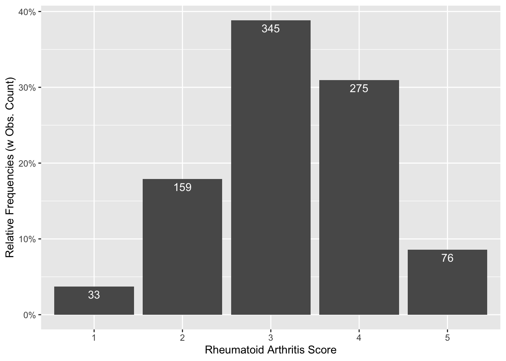
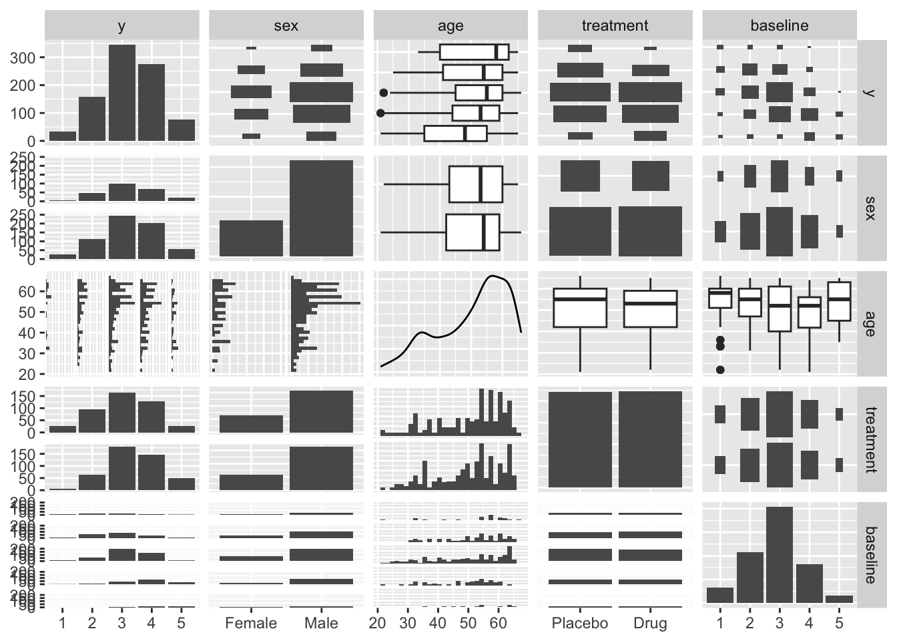
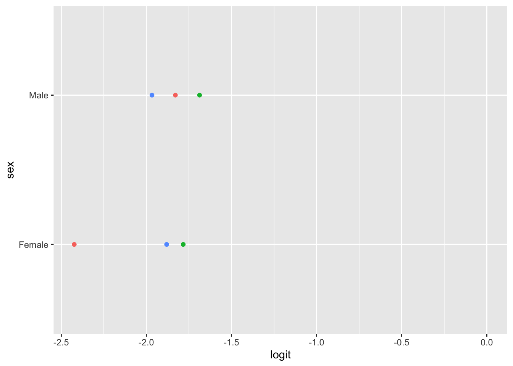
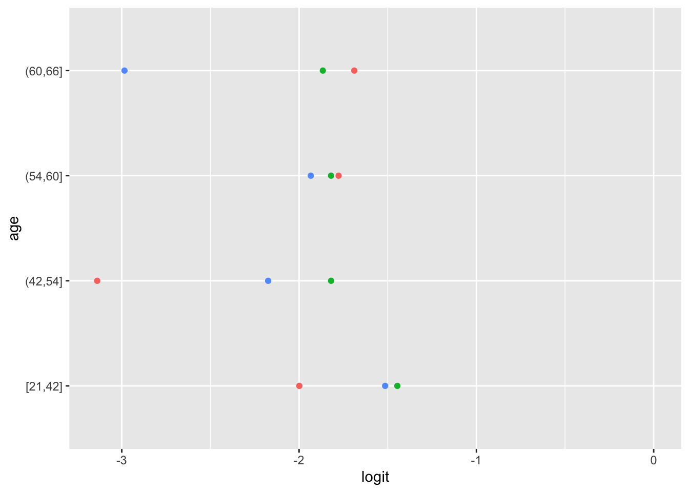
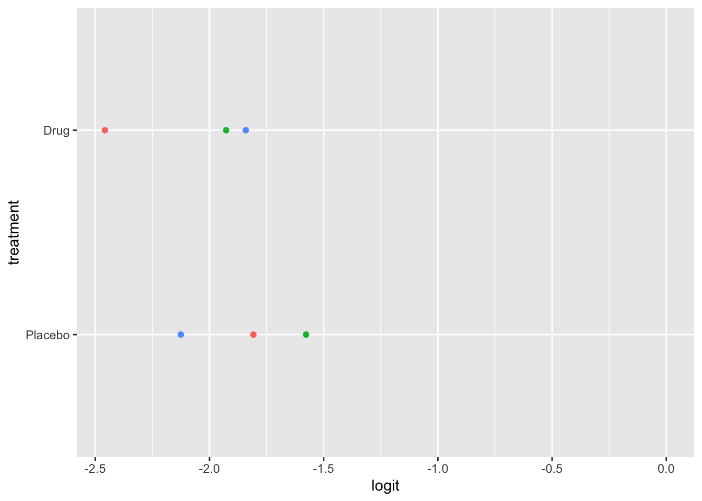
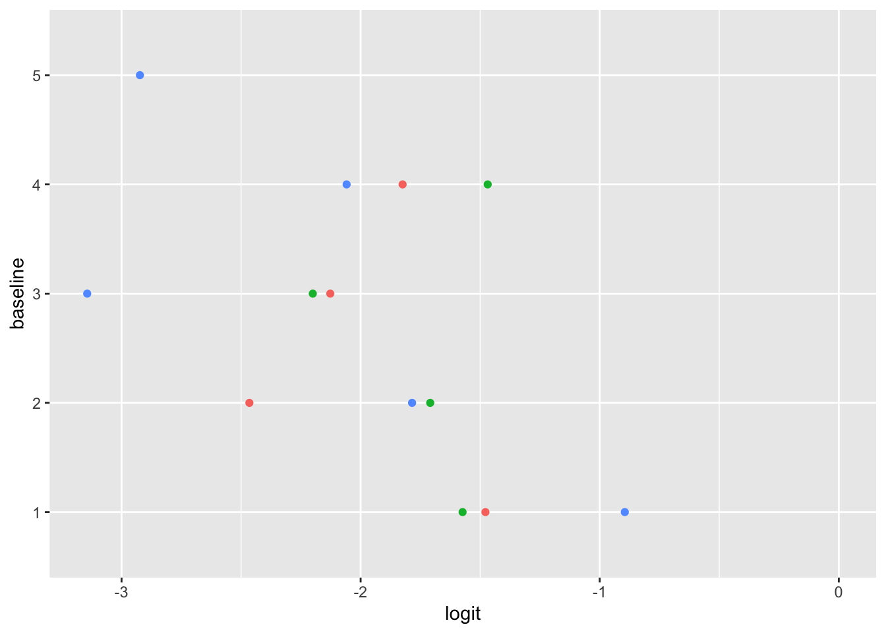

# install.packages("multgee")
# install.packages("pander")
# install.packages("table1")
# install.packages("car")
# install.packages("mltools")
# install.packages("pomcheckr")
library(conflicted)
library(table1)
library(multgee)
library(skimr)
library(pander)
library(gtsummary)
library(car)
library(mltools)
library(MASS)
library(pomcheckr)
conflict_prefer("filter", "dplyr", quiet = TRUE)
conflict_prefer("select", "dplyr", quiet = TRUE)
library(tidyverse)20 Ordinal Logistic Regression
DIY Ordinal Logistic Regression in R
20.1 Introduction to Logistic Regression
We are all familiar with the concept of Logistic regression. It is used to analyze data when the outcome variables is categorical. There are three types of logistic regression, Binary logistic regression where the outcome variable is binary (Yes/No), Multinomial logistic regression when the outcome variable is categorical with three or more categories, Ordinal logistic regression where there is a natural ordering among three or more categories of the outcome variableagresti2002?.
| Binary LR | Multinomial LR | Ordinal LR | |
|---|---|---|---|
| Number of categories? | Two | Three or more | Three or more |
| Ordering matters? | No | No | Yes |
20.2 What is Ordinal Logistic Regression?
Ordinal logistic regression is a statistical modeling technique used to investigate relationships between predictor variables and ordered ordinal outcome variables. It extends traditional logistic regression to account for the response variable’s inherent ordering, making it suitable for situations where the outcome has multiple levels with unequal intervals.
For example, cases when ordinal logistic regression can be applicable are,
- Likelihood of agreement : In a survey the responses to the outcome variable is categorized in multiple levels such as, Strongly Disagree, Disagree, Agree, Strongly Agree.
- Satisfaction level: Measuring satisfaction level of a service on a scale like, “very dissatisfied,” “dissatisfied,” “neutral,” “satisfied,” and “very satisfied.”
- Pain Intensity: Patients participating in medical research may be asked to rate the intensity of their pain on a scale ranging from “no pain” to “mild pain,” “moderate pain,” and “severe pain.”
20.3 How to do Ordinary Logistic Regression in R
Some popular R packages that perform Ordinal/Ordered Logistic Regression are,
-
MASSpackage : functionpolr() -
ordinalpackage: functionclm() -
rmspackage: functionorm()
In this demonstration I will be using polr() from MASS package to conduct the analysis.
20.4 Mathematical Formulation of a Ordinal model
Let us assume Y is an outcome variable with levels, \(l = 1, 2, ... , L\). According to the MASS package the parameterization of the outcome variable Y with l levels is,
\[ \ln\left(\frac{P(Y\le l)}{P(Y>l)}\right) = \zeta - \eta_{1}X_{1}- \eta_{2}X_{2} - \ldots - \eta_{k}X_{k} \]
Here,
- \(\zeta\) is the intercept representing the log-odds of \(Y\) being less than or equal to \(l\) when the other covariates are 0 or in there reference level. Ordinal logistic regression model has one intercept for each level of Y and the total number of intercepts is \(L-1\).
- In case of categorical predictors, each coefficient \(\eta_{k}\) is the log of odds ratio comparing the odds of \(Y\le l\) at a level compared to the reference category. Taking exponent of this term we get \(e^{\eta_{k}}\) which is the odds ratio comparing the odds of \(Y\le l\) at a level compared to the reference category.
- In case of continuous predictors, each coefficient \(\eta_{k}\) is the log of odds ratio comparing the odds of \(Y\le l\) between subjects who differ by 1 unit. Taking exponent of this term we get \(e^{\eta_{k}}\) which is the odds ratio comparing the odds of \(Y\le l\) between subjects who differ by 1 unit.
Similar to binary logistic regression the left hand side of this equation is the log-odds of a probability. In case of binary logistic regression it is log-odds of probability of an event whereas here we consider the cumulative probability up to and a specified level including that level.
20.4.1 Model Assumptions
The key assumptions of Ordinary logistic Regression which ensures the validity of the model are as follows,
- The outcome variable is ordered.
- The predictor variables are either continuous, categorical, or ordinal.
- There is no multicollinearity among the predictors.
- Proportional odds.
20.5 Example
To demonstrate the methods I will be using the arthritis data from multgee package. The data has Rheumatoid self-assessment scores for 302 patients, measured on a five-level ordinal response scale at three follow-up times. The arthritis dataset is in a data frame with 906 observations with the following 7 variables:
-
id: Patient identifier variable. -
y: Self-assessment score of rheumatoid arthritis measured on a five-level ordinal response scale, 1 being the lowest. -
sex: Coded as (1) for female and (2) for male. -
age: Recorded at the baseline. -
trt: Treatment group variable, coded as (1) for the placebo group and (2) for the drug group. -
baseline: Self-assessment score of rheumatoid arthritis at the baseline. -
time: Follow-up time recorded in months.
20.5.1 Libraries
Here are libraries required to run the analysis.
20.5.1.1 Warning
Instead of installing package MASS to the global environment use MASS::polr() for running the Ordinal Logistic Regression model. As masking it conflicts wirh the select() function for tidyverse and gtsummary().
20.5.2 Exploring data
Let’s begin by looking at the data.
arthritis_df <-
multgee::arthritis %>%
mutate(
y = factor(y, ordered = TRUE),
sex = factor(
sex,
levels = c(1, 2),
labels = c("Female", "Male")
),
treatment = factor(
trt,
levels = c("1", "2"),
labels = c("Placebo", "Drug")
),
baseline = factor(baseline, ordered = TRUE)
) %>%
select("y", "sex", "age", "treatment", "baseline") %>%
drop_na() %>%
as_tibble()20.5.2.1 Summary
skim(arthritis_df)| Name | arthritis_df |
| Number of rows | 888 |
| Number of columns | 5 |
| _______________________ | |
| Column type frequency: | |
| factor | 4 |
| numeric | 1 |
| ________________________ | |
| Group variables | None |
Variable type: factor
| skim_variable | n_missing | complete_rate | ordered | n_unique | top_counts |
|---|---|---|---|---|---|
| y | 0 | 1 | TRUE | 5 | 3: 345, 4: 275, 2: 159, 5: 76 |
| sex | 0 | 1 | FALSE | 2 | Mal: 645, Fem: 243 |
| treatment | 0 | 1 | FALSE | 2 | Dru: 445, Pla: 443 |
| baseline | 0 | 1 | TRUE | 5 | 3: 407, 2: 215, 4: 166, 1: 67 |
Variable type: numeric
| skim_variable | n_missing | complete_rate | mean | sd | p0 | p25 | p50 | p75 | p100 | hist |
|---|---|---|---|---|---|---|---|---|---|---|
| age | 0 | 1 | 50.43 | 11.09 | 21 | 42 | 54 | 60 | 66 | ▁▃▃▇▇ |
20.5.2.2 Descriptives
arthritis_df %>%
tbl_summary(by = treatment) | Characteristic | Placebo, N = 4431 | Drug, N = 4451 |
|---|---|---|
| y | ||
| 1 | 26 (5.9%) | 7 (1.6%) |
| 2 | 96 (22%) | 63 (14%) |
| 3 | 165 (37%) | 180 (40%) |
| 4 | 129 (29%) | 146 (33%) |
| 5 | 27 (6.1%) | 49 (11%) |
| sex | ||
| Female | 127 (29%) | 116 (26%) |
| Male | 316 (71%) | 329 (74%) |
| age | 55 (42, 60) | 53 (42, 59) |
| baseline | ||
| 1 | 33 (7.4%) | 34 (7.6%) |
| 2 | 105 (24%) | 110 (25%) |
| 3 | 207 (47%) | 200 (45%) |
| 4 | 83 (19%) | 83 (19%) |
| 5 | 15 (3.4%) | 18 (4.0%) |
| 1 n (%); Median (IQR) | ||
20.5.2.3 Plotting Outcome variable (rheumatoid arthritis score)
arthritis_df %>%
count(y) %>%
mutate(prop = n / sum(n)) %>%
rename(score = y) %>%
ggplot() +
aes(x = score, y = prop) +
labs(
x = "Rheumatoid Arthritis Score",
y = "Relative Frequencies (w Obs. Count)"
) +
scale_y_continuous(labels = scales::percent) +
geom_col() +
geom_text(aes(label = n), vjust = 1.5, color = "white")
20.5.2.4 Pairs
GGally::ggpairs(arthritis_df)
20.5.3 How to use polr()
The basic structure of the function looks like this (there are other options we don’t list, but we won’t need them):
polr(
# Two required arguments
formula,
data,
# Optional stuff
weights,
subset,
na.action,
Hess = FALSE,
method = "logistic"
)Here,
-
formula: a formula expression as for regression models, of the form response ~ predictors. The response should be a factor (preferably an ordered factor), which will be interpreted as an ordinal response, with levels ordered as in the factor. -
data: a data frame which contains the variables occurring in formula. -
weights: optional case weights in fitting. Defaults to 1. -
subset: expression saying which subset of the rows of the data should be used in the fit. All observations are included by default. -
na.action: a function to filter missing data. We removed all the missing values from our data, so we won’t use this. -
Hess: logical for whether the Hessian (the observed information matrix) should be returned. We will use this if we intend to call summary or variance covariance on the fit. -
method:"logistic","probit","loglog"(log-log),"cloglog"(complementary log-log), or"cauchit"(corresponding to a Cauchy latent variable). The default option is to use the Logistic link function.
20.5.4 Fitting the model
Using this function, let’s fit the POLR model to the data. By default, the Hess option is turned off, so we turn it on so that we can calculate the odds ratios later.
fit_olr_mod <- MASS::polr(y ~ ., data = arthritis_df, Hess = TRUE)The output is a bit ugly, so we clean it up for more professional documents using the pander() function (from the pander:: and knitr:: packages).
Call: MASS::polr(formula = y ~ ., data = arthritis_df, Hess = TRUE)
| Value | Std. Error | t value | |
|---|---|---|---|
| sexMale | 0.1513 | 0.1377 | 1.099 |
| age | -0.01366 | 0.005713 | -2.391 |
| treatmentDrug | 0.5454 | 0.1255 | 4.347 |
| baseline.L | 3.109 | 0.2826 | 11 |
| baseline.Q | 0.6897 | 0.233 | 2.96 |
| baseline.C | 0.09577 | 0.1796 | 0.5334 |
| baseline^4 | -0.1802 | 0.1239 | -1.455 |
| Value | Std. Error | t value | |
|---|---|---|---|
| 1|2 | -4.244 | 0.3731 | -11.38 |
| 2|3 | -2.162 | 0.339 | -6.378 |
| 3|4 | -0.2073 | 0.3352 | -0.6186 |
| 4|5 | 2.094 | 0.3429 | 6.108 |
Residual Deviance: 2238.917
AIC: 2260.917
The summary() function called on a polr model object gives us the coefficients, intercepts, their standard errors, and \(t\)-statistics.
20.5.5 Odds Ratio
In order to get the Odds Ratio and the predictor’s confidence intervals we take the exponential of the coefficient. There is no straight forward way of doing that in R. Below is one way of solving that issue, which uses the confint() function from the multgee:: package.
# Calculate a matrix of the lower and upper confidence intervals
CI_mat <- confint(fit_olr_mod)
# Combine results and make them "pretty"
orResults_df <- tibble(
variable = rownames(CI_mat),
oddsRatio = exp(fit_olr_mod$coefficients),
lower = exp(CI_mat[, 1]),
upper = exp(CI_mat[, 2])
)
pander(orResults_df)| variable | oddsRatio | lower | upper |
|---|---|---|---|
| sexMale | 1.163 | 0.8883 | 1.524 |
| age | 0.9864 | 0.9754 | 0.9975 |
| treatmentDrug | 1.725 | 1.35 | 2.208 |
| baseline.L | 22.41 | 12.94 | 39.27 |
| baseline.Q | 1.993 | 1.266 | 3.161 |
| baseline.C | 1.101 | 0.7745 | 1.567 |
| baseline^4 | 0.8351 | 0.6548 | 1.064 |
20.5.6 Interpreting the Results
-
Sex: Compared to female participants, Male participants had
orResults_df[1, "oddsRatio", drop = TRUE]fold higher odds of reporting high score of rheumatoid arthritis. -
Age: For 1 year change in age the odds of reporting high rheumatoid arthritis score changes
orResults_df[2, "oddsRatio", drop = TRUE]times. -
Treatment: Compared to the Placebo group participants, the participant who received the drug had
orResults_df[3, "oddsRatio", drop = TRUE]times higher odds of reporting high score of rheumatoid arthritis. - Baseline score: It appears that we could perhaps collapse the baseline rheumatoid arthritis score into only three levels, because the confidence intervals for the cubic and quartic polynomial components include 1.
20.5.7 Checking Assumptions
Next we check the key assumptions to verify whether the model is appropriate to use.
20.5.7.1 Multicollinearity
Two of our predictors are binary, one predictor is continuous, and one predictor and the response are ordered. Because of this, there are no “standard” functions to calculate the correlation matrix of these predictors. However, we will use indicator encoding to transform the binary predictors, and we will use polynomial encoding to transform the ordered predictor (polynomial encoding represents ordered predictors as a set of polynomial terms with \(G-1\) components, where \(G\) is the number of categories). Both actions were already done “behind the scenes” by the polr() function, so we simply need to access the “model matrix” object. We do this via the model.matrix() function, but we remove the first column because it represents the intercept.
# Extract the encoded features used by the POLR model, dropping the intercept
model.matrix(fit_olr_mod)[, -1] %>%
# calculate the correlation matrix of the predictors (using the "spearman"
# option because some of the predictors are binary)
cor(method = "spearman") sexMale age treatmentDrug baseline.L baseline.Q
sexMale 1.000000000 -0.004979624 0.029167450 -0.028388501 0.02835442
age -0.004979624 1.000000000 -0.041135132 -0.113609702 0.06570578
treatmentDrug 0.029167450 -0.041135132 1.000000000 -0.003582072 0.01949695
baseline.L -0.028388501 -0.113609702 -0.003582072 1.000000000 -0.19856768
baseline.Q 0.028354417 0.065705778 0.019496947 -0.198567680 1.00000000
baseline.C -0.045464607 0.090816675 0.009951240 -0.573972635 -0.02112136
baseline^4 -0.036878173 -0.043472765 -0.015992296 0.306681433 -0.78207212
baseline.C baseline^4
sexMale -0.04546461 -0.03687817
age 0.09081667 -0.04347276
treatmentDrug 0.00995124 -0.01599230
baseline.L -0.57397264 0.30668143
baseline.Q -0.02112136 -0.78207212
baseline.C 1.00000000 -0.31490991
baseline^4 -0.31490991 1.00000000The correlation is quite low among most of the predictors. However, we see that the quadratic and quartic (.Q and ^4, respectively) components are just under the “let’s worry about this” threshold of 0.8 in absolute value. This suggests to me that the highest two categories of the rheumatoid arthritis score at baseline (4 and 5) can probably be collapsed without losing a lot of information. However, we’ll keep things simple for now and say there is no multicollinearity.
20.5.7.2 Proportional Odds
Ordinal logistic regression makes the assumption that the relationship between each pair of outcome groups is the same. In other words, ordinal logistic regression assumes that the coefficients describing the relationship between, say, the lowest and all higher categories of the response variable are the same as those describing the relationship between the next lowest and all higher categories, and so on. This assumption can be vefied several ways. Here, I have used a package calledpomcheckr? that generates graphics to check for proportional odds assumption created by UCLA statistical consulting group see more here .
20.5.7.2.1 Graphics to check for proportional odds




Here the function is calculating the difference in proportion of the categories in the outcome variable and plotting them against each category of the predictors. In the ideal case scenario, the distance between the dots in each line is somewhat equal; if this is true, then the categories should be considered proportional. It appears that the proportional odds assumption is violated here.
Add discussion on how to fix the assumption violation.